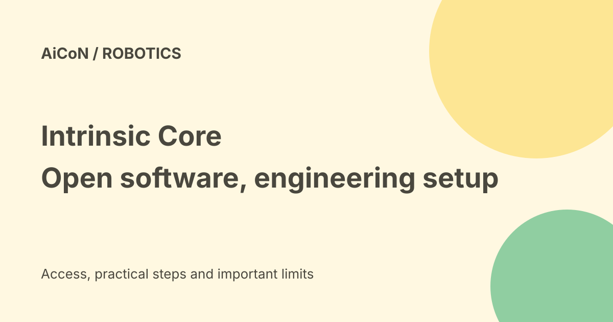

Intrinsic Core: open robotics software, not a ready-made robot
Intrinsic Core opens foundational parts of Intrinsic's industrial robotics platform under Apache 2.0. It includes a local runtime, planning, perception and control tools. The software can reduce repeated engineering work, but a real robot installation still needs compatible hardware and safety work.

What is Intrinsic Core?
The official repository describes an open local runtime, developer toolkit and real-time control framework for industrial robotics. It provides building blocks from simulation and perception to hardware execution. Intrinsic announced the open-source release at ROSCon 2026 on 22 September.
Core is not the whole commercial Intrinsic product. The company's announcement separates the open components from enterprise offerings, including Flowstate, advanced AI models and cloud services. A free code license does not make every deployment service or robot purchase free.
Which building blocks are included?
The repository lists a runtime to coordinate application execution, a motion-control engine, motion planning, perception, local inference and hardware interfaces. It also includes a digital twin, a model of the robot and workcell used for simulation. Perception helps estimate where an object is; planning works out a movement path.
The Open Machine Tending reference solution gives teams a starting point for a manufacturing task. A reference solution is something to study and adapt, not a certified installation for any machine. Check each component's documentation and dependencies before using it in production.
ROS compatibility and current requirements
| License | Apache 2.0 for the checked Core repository. |
|---|---|
| Operating system | README lists Ubuntu 24.04 LTS or 26.04 LTS, with 22.04 LTS supported. |
| ROS | README names ROS 2 Lyrical Luth and describes ROS 2 interoperability. |
| Runtime | Local, with a container-based environment described in the repository. |
| Hardware | Check supported drivers, interfaces and the requirements of your selected solution. |
ROS is a robotics software ecosystem. Compatibility means there are ways to connect the systems; it does not mean every older ROS package or hardware driver is automatically compatible. The documentation and supported versions can change, so use the current Getting Started guide for a fresh setup.
What does it cost?
The Core source license allows use under its terms. Computers, GPUs, robot arms, grippers, cameras, controllers and integration labour remain separate costs. Third-party models, assets and libraries can have their own licenses. Review those before commercial deployment.
Enterprise tools and services are separate offerings. No complete production-system price, Indian hardware quote or free industrial support contract was verified here. Ask for the exact scope and support terms instead of assuming the entire platform is free.
A careful evaluation route
- Read the official repository, license and developer Getting Started material.
- Choose a supported Ubuntu/ROS environment and confirm the selected solution's hardware needs.
- Start with the reference simulation and non-sensitive example assets.
- Test model geometry, limits, planning failures and recovery in simulation.
- Before connecting real hardware, have qualified people review drivers, emergency stops, safeguarding and the workcell's safety requirements.
- Use controlled testing and a documented deployment plan, with backups and version pinning.
We did not install Core, run a simulation or operate any robot. These steps are an evaluation checklist, not a tested hardware walkthrough or safety certification.
Why collision-free is not a blanket safety promise
The vendor describes collision-free path planning. A planner depends on correct geometry, calibration, sensor input and constraints. A real scene can change, and hardware can fail. Software's planned path is different from a guarantee that a person near the machine cannot be harmed.
Keep the engineering and safety review separate from AI marketing claims. Do not let an AI-generated movement command directly control an unreviewed workcell.
India and Kerala fit
Core may interest robotics labs and manufacturing teams that already have relevant engineering skills. It is not a consumer phone app or a government grant. Public source access does not verify local hardware availability, a university's supported setup or region-specific enterprise terms.
For a college project, simulation and a documented reference task can be a useful first stage. Budget for equipment, maintenance and supervision before proposing a physical installation.
Frequently asked questions
Is all of Intrinsic now free?
No. The release opens core components; enterprise offerings remain separate.
Does hardware-agnostic mean no drivers?
No. You still need supported interfaces, configuration and testing.
Was a real robot tested for this guide?
No.
What changed since the earlier post?
This guide adds current repository requirements, distinguishes open Core from commercial services and explains the simulation-first and safety boundaries. It does not turn compatibility into plug-and-play support for every robot.
Sources: Official Core repository · Official product page · Release announcement · Developer community and guides · Repository Getting Started guide. Checked 8 October 2026.